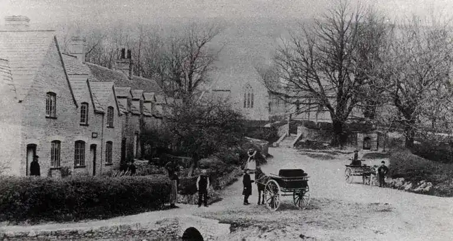
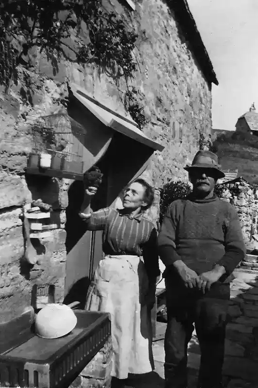
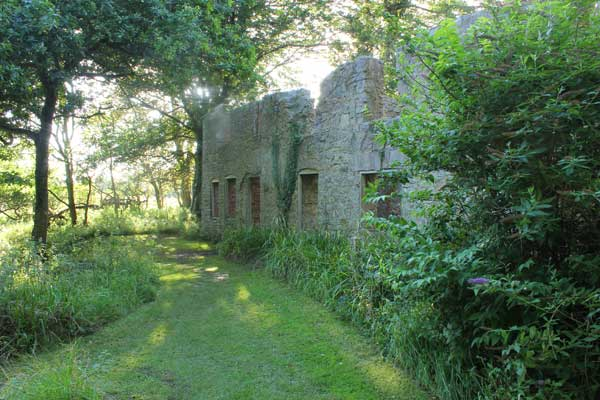

After the Evacuation
What happened to the people of Tyneham
By James Langton · Updated May 2026

On 19 December 1943, 225 men, women and children walked out of Tyneham for the last time. They left behind their homes, their church, their school, their fields and — in many cases — the only community they had ever known. They did so believing it was temporary. For most of them, it was not.
What happened to the people of Tyneham after the evacuation is a story that has largely been told in fragments — in family memories, in the testimonies recorded for the Tyneham Remembered documentary, and in the visitor book at St Mary's Church, where descendants still come to write about grandparents who never stopped talking about the place they lost.
Scattered Across Dorset
The villagers were not moved as a community. They dispersed individually and in family groups to wherever they could find accommodation at short notice in the middle of winter. Many went to Wareham, the nearest market town. Others settled in Wool, Swanage, Dorchester and the surrounding villages of the Purbeck Hills.
For farming families who had worked the same land for generations, the disruption went beyond losing a home. They lost their livelihoods too. Tenant farmers had to find new holdings at a time when land was scarce. Agricultural labourers had to find new employers in unfamiliar places. The tight-knit world of a small rural village — where everyone knew their neighbours, where the same families had filled the same pews at St Mary's for a century — simply ceased to exist.
The Millers of Worbarrow Bay

The Miller family had lived and fished at Worbarrow Bay for generations, their lives shaped entirely by the sea and the valley behind it. Jack and Miggie Miller — photographed outside Sea Cottage in around 1930 — were among those who had to leave the bay cottages when the requisition order came. Their way of life, tied to a specific stretch of coast and the rhythms of fishing and farming that came with it, could not simply be transplanted elsewhere.
Charles and Harriet Miller, an older generation of the family, had spent their whole lives at Worbarrow. For people of their age, uprooted in winter with little notice, the loss was particularly cruel. Some of the older residents of Tyneham and Worbarrow died within a few years of the evacuation, never having seen their homes again.

The Bonds
The Bond family, who had owned Tyneham estate since 1683, were in a very different position from the tenant farmers and labourers. By 1943 Tyneham House had already been in decline for decades following a series of financial difficulties in the early twentieth century. Ralph Bond, the last of the family to live at Tyneham House, had died in 1935. His sister Lilian Bond — who would later write Tyneham: A Lost Heritage, the most important first-hand account of village life — had already moved away.
For the Bonds the evacuation was less a sudden rupture than the final chapter of a long retreat. Lilian Bond's book, published in 1956, drew on her memories of the village she had grown up in and became a lasting memorial to a world that had gone.
Waiting for the Return

For years after the war, many former residents fully expected to go back. The promise made when the village was requisitioned — that the displacement was temporary and that residents could return when the fighting was over — was known locally as Churchill's pledge, and people held to it. Letters were written. MPs were lobbied. The returning soldiers themselves, many of whom had fought in part to protect the kind of England that Tyneham represented, found it difficult to accept that such a place could simply be taken and kept.
But the years passed and the Army did not leave. The military had found in the ranges around Tyneham an ideal training ground that was difficult to replicate elsewhere. As the Cold War set in and defence spending remained high, the prospect of return grew steadily more remote.
Descendants Still Come
When the Lulworth Ranges were eventually opened to visitors on certain weekends from the mid-1970s, some former residents made the journey back. Not all of them found it easy. To walk through a village where your childhood home stands as a roofless shell, with trees growing through the floor where you once sat at a kitchen table, is not a comfortable thing.
The visitor book at St Mary's Church contains entries from the children and grandchildren of Tyneham families — Millers, Taylors, Bucklers, Warrs — who come to see the place their families have never stopped talking about. Some write with sorrow, some with anger at the broken promise, and some simply with a quiet wish that the people who lived here had been allowed to stay.